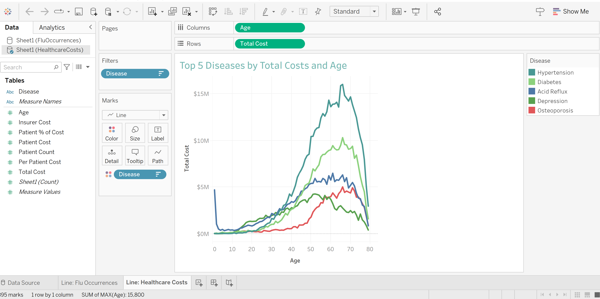
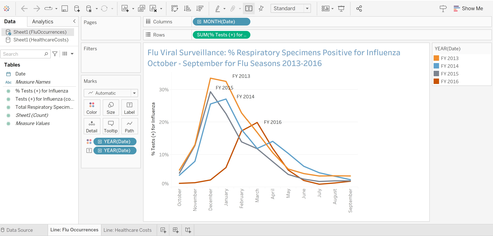

I have experience with SQL, Tableau, Microsoft Office Specialist Certification and some DB Admin experience as well.
Below are some of the charts and projects to give a look into the work I have done.
On the main page of the github is work I have done in JSquery with charting and mapping.
This table shows the top 5 diseases by total cost and age.
This table shows the top 5 diseases by total cost and age.
